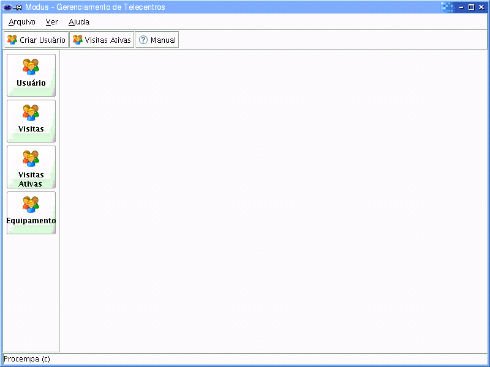
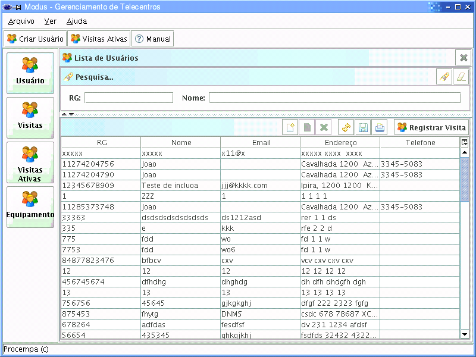
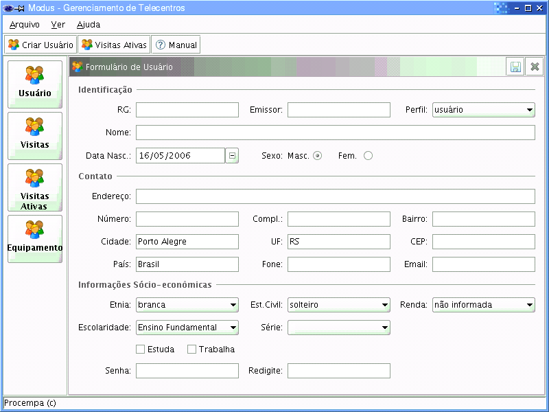
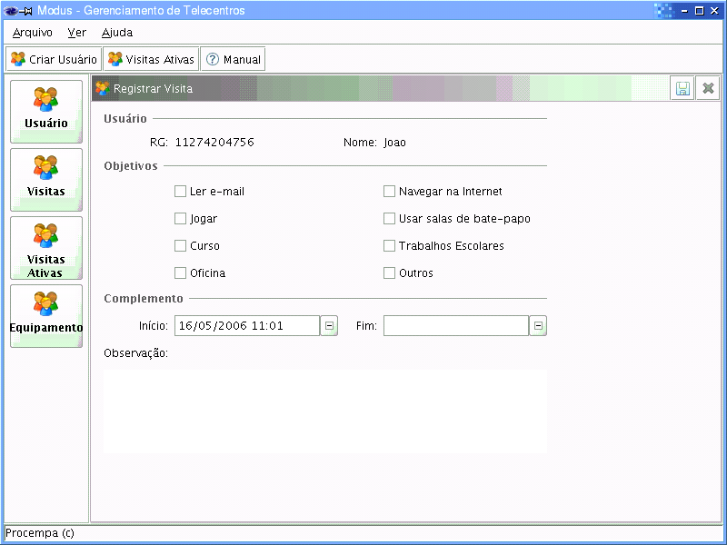
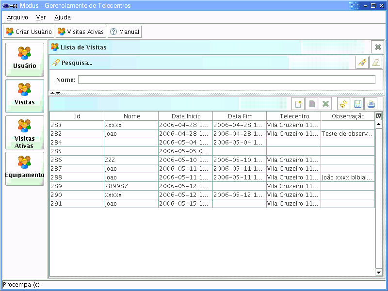
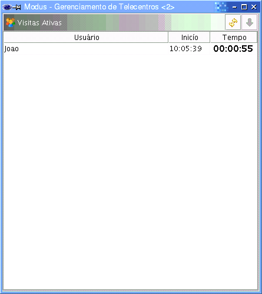
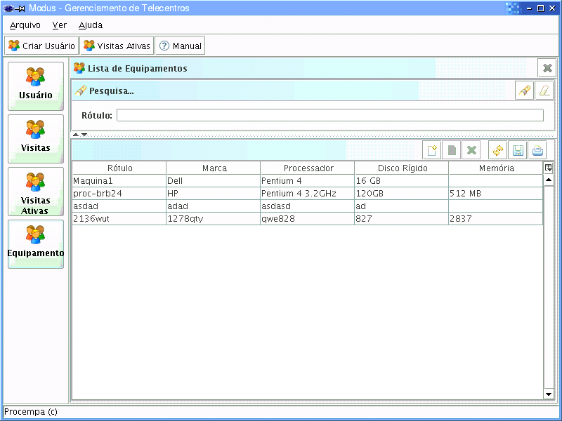
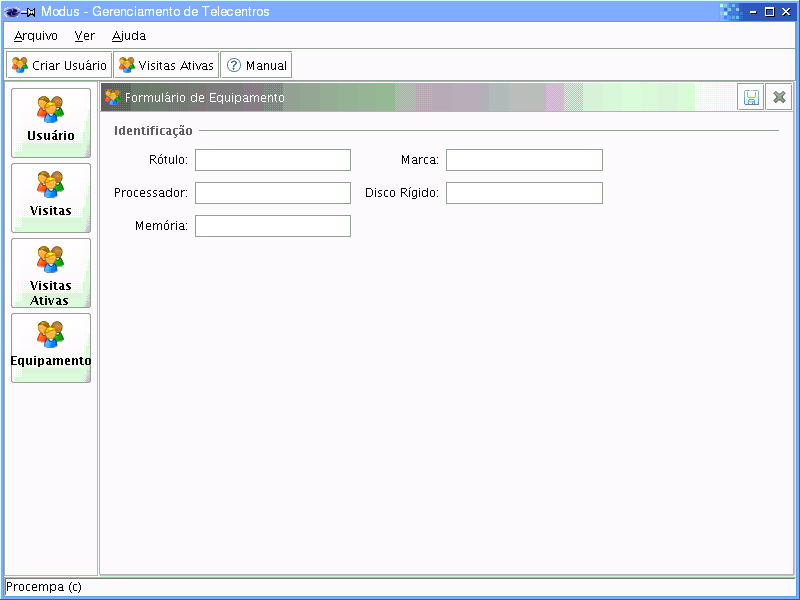

Sistema ModusGT
ModusGT é um sistema de informação que tem como objetivo sistematizar as rotinas administrativas e pedagógicas dos Telecentros conveniados com a Prefeitura Municipal de Porto Alegre.
A visão do sistema é de automatizar as rotinas do dia-a-dia dos Telecentros, como cadastramento de usuários, registro das visitas, gerenciamento de cursos e atividades, prestações de contas, inscrições e provas on-line, além da emissão de relatórios gerenciais e estatísticos.
O sistema ModusGT, ao ser inicializado, apresenta a seguinte tela:

No sistema, as listas podem ter disponíveis botões com algumas funcionalidades:
Novo – inserção de um novo registro.
Modificar – alteração de um registro.
Remover – exclusão de registro.
Atualiza Lista – refresh da lista de pesquisa, atualizando seu conteúdo.
Salva a Lista – salvamento da lista de pesquisa em formato específico.
Imprimir Listagem – formatação da lista para impressão.
Sumário
Usuários 3
Como criar um novo Usuário... 4
Como registrar uma Visita... 5
Visitas 6
Como visualizar as Visitas Ativas... 7
Equipamentos 8
Como cadastrar um Equipamento... 9
A Lista de Usuários pode ser filtrada por RG e Nome. Há a possibilidade de ordenação por todas as colunas da lista, bastando para isso clicar no label da coluna.

Para cadastrar um novo Usuário tem-se três alternativas. A primeira é, através do menu, acessando Arquivo > Novo > Usuário. A segunda é, na lista de botões horizontais, clicando no botão Criar Usuário. A terceira é, na Lista de Usuários, utilizando o botão Novo.

Através de botão (Registrar Visita) da Lista de Usuários, é possível registrar a visita de um usuário ao Telecentro. Neste registro serão colocados o objetivo da visita, bem como o horário de início e fim da mesma. Complementarmente coloca-se alguma observação pertinente à visita.

Para ver a Lista de Visitas feitas ao Telecentro, basta clicar no botão Visitas na barra de ferramentas vertical. Outra alternativa é entrar no menu Ver > Visitas.

Para ver a Lista de Visitas Ativas do Telecentro, basta clicar no botão Visitas Ativas na barra de ferramentas vertical. Outra alternativa é entrar no menu Ver > Visitas Ativas.

A Lista de Visitas pode ser atualizada a qualquer tempo para visualização das novas visitas cadastradas após a visualização da lista.
Para visualizar a Lista de Equipamentos do Telecentro, basta clicar no botão Equipamentos na barra de ferramentas vertical. Outra alternativa é entrar no menu Ver > Equipamentos.

Através de um botão da lista, é possível incluir um novo Equipamento. Alternativamente, o menu Arquivo > Novo > Equipamento.
